debugging¶
Source: What is Debugging? How to Debug Your Code
In this article we'll talk about what debugging is, how to debug your code, and how you can get better at it.
How Debugging Started¶
The words "bug" and "debugging" in software are popularly attributed to Admiral Grace Hopper. A true legend, she wrote the first compiler that ever existed.
In the 1940s, while she was working on a computer being developed for the US navy at Harvard University, her associates discovered a moth (an actual insect) stuck in a relay that crashed the computer.
When fixing this problem, she remarked that they were "debugging" the system.
If you're a fan of etymology though, you might be interested in the fact that the word "debugging" seems to have been used as a term in aeronautics before entering the world of computers.
And apparently there's some kind of proof that even Thomas Edison used it in the sense of "technical error" back in 1878.
But that's not the point of this article. The point is that debugging is a core part of software development. It has always been and it probably always will be.
Thankfully, however, the cases were we need to remove actual insects from computers are rather rare, now.
Why Should You Learn About Debugging?¶
Bugs and errors are so prone to happen in software development because it's such a conceptual and abstract activity.
As developers, we work with information. We organize it, move it, update it and edit it, send it places and then receive it again.
We work with information all the time, but not directly with it. Information isn't "actually" there within the computer, at least not in the format users think of it.
Within the computer there're only electric pulses, that are then abstracted to 1s and 0s, and then again abstracted into whatever information we're working with.
To interact with and make use of computers, we use programming languages. These provide levels of abstraction from the actual tasks the computer is performing, and representations of the information we're managing.
Programming can be a very abstract activity, and it's really easy to quickly lose sight of what's the actual task the computer is performing, or what information we're acting upon in a certain line of code. And from there on, it's easy to give the wrong instructions to the computer and miss the target we're looking for.
An inside joke in the software development world is that devs normally spend 5 minutes writing code and 5 hours trying to understand why things don't work as they should.
As developers, no matter how good we get, we're going to spend countless hours debugging our code, so we should try to get better and quicker at it.
Debugging can be defined as the process of finding the root of a problem in a code base and fixing it.
Usually we'll start by thinking out all possible causes, then testing each of this hypotheses (starting from the most likely ones), until the ultimate root cause is found. Then we correct it and ensure it won't happen again.
There's no magic solution for bugs. Usually it takes a combination of googling, logging our code, and checking our logic against what is really happening.
While there are many tools that can help you with debugging, using these tools isn't necessarily the hard part. What is hard is truly understanding the errors you get, and truly understanding what's the best solution for them.
So let's start by first talking about the "debugging mindset" and then exploring some useful tools we can use to debug our code.
How to Get in a Debugging Mindset¶
Pay Attention to Error Messages¶
In almost every development environment, if your code fails, you will likely be shown an error message that (to some extent) explains why your code is failing.
Take this code for example:
mickTheBug('Im a scary bug!')
const mickTheBug = message => console.log(message)
This code throws the following error:
ReferenceError: Cannot access 'mickTheBug' before initialization
at Object.<anonymous> (/home/German/Desktop/ger/code/projects/test.js:4:1)
As you can see, the error message points to the problem clearly and even declares at what line it's happening ( test.js:4:1 ).
This may seem like a silly advise, but you might be surprised to see how many programmers don't read error messages carefully, and just react to the bug with the first idea that comes to their mind.
Error messages are there for a reason, and this is to give us at least a first idea of where the problem is coming from.
Google Things¶
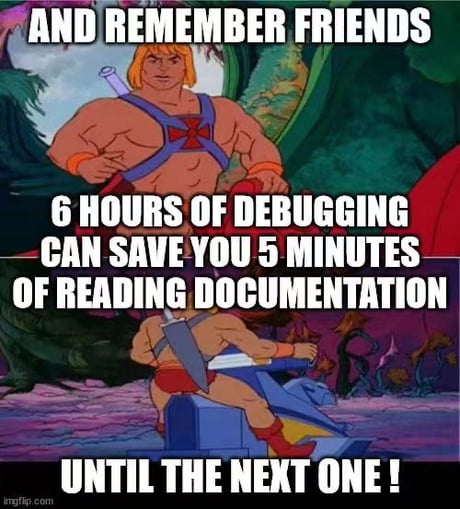
If the error message you get isn't clear to you, or you can't figure out why you're getting it, a good first step would be to Google it.
One of the many amazing things about coding is that the online community is huge. Almost surely there are tons of people already that have faced the same bug you're facing, and that have solved it and explained it so other people don't have to struggle with it, too.
When googling, a good idea is to be as detailed as possible in the search. Following the previous example, I'd use "javascript ReferenceError: Cannot access before initialization". I've found that mentioning the technology you're using in the search gives you more accurate results.
I've also learned that removing things that are only particular to my code and not an error everyone would get, as the name of my function ('mickTheBug'), is important.
Another good idea is trying to use trusted and recent sources. Trusted means either official documentation or solutions that have been validated by others. Recent means solutions that have been implemented as recently as possible, because something that worked five years ago may not the best way to solve the problem right now.
Official documentation always should be the first thing to check either when you're learning something new or dealing with an error.
Official docs are typically the most complete and updated source of information for any given tool. It sometimes may feel tedious or overwhelming to go through so much technical information, but in the long run I think it saves time.
The deal with official docs is sometimes they contain so much info and it's explained to such a detailed level that it's more confusing than explanatory.
Because of that I think it's a good idea to always use more than one source for any particular topic, and "hear different voices" explain the same thing. Usually only after reading the docs, a few articles, and watching a few youtube videos, I feel I get a good understanding of the tool I'm working with.
Explain Your Logic to Another Person or a Duck¶
I mentioned before how programming can be an abstract activity, which makes it easy to lose sight of things, make wrong assumptions, and misinterpret the information we're working with.
A good solution to this is to go through your code line by line, reading it and explaining it out loud as you go. The rubber duck technique is a popular way of doing it, but you can choose your favorite pet or imaginary friend. =P
The idea is to force yourself to actually read your code instead of just assuming you know what it does. In this way you can check the logic in your mind versus what is actually happening in your code.
The fact that we tend to assume things and not pay detailed attention to every single line of code is just human nature. It's a mechanism that helps us save energy and do things quicker.
But when debugging, we need to enforce our brain to work with us and be as present as possible on every line of code.
Narrow Down Your Problem and Understand Where the Error is Generated¶
As your codebase get's bigger, it will be hard to analyze every line of code in the search for your bug. So it's a good idea to divide and conquer, starting your search in the places that are most likely to generate the issue.
Let's see this example. I have a function that takes a number and returns it multiplied by two, and another that prints a firstName, a lastName, and the result of the multiplying function.
const multiply = num => num*2
const mickTheBug = async (firstName, lastName, age) => {
console.log(`My name is ${firstName} ${lastName} and the double of my age is ${multiply(age)}`)
}
mickTheBug('Mick', 10)
The code makes sense and runs without throwing an error, but the result I get is My name is Mick 10 and the double of my age is NaN, which is not what I want.
Here I can see that 10 is printing where lastName should be. And as the parameters are set in the line where the function is being called.
It's probably a good guess to start by checking if parameters where passed in the right way. And indeed we can see that when I called the function I passed it two parameters, Mick and 10, and the function expects three parameters firstName, lastName, age.
Typescript would've easily prevented us from making this mistake. More on that later. ;)
Again, this is a silly example, but it illustrates how we can deduce were a problem is coming from, even if we don't have an error message to help us.
In these moments, try to ask yourself the following questions:
- How do I know I'm seeing an error?
- What input am I providing? Where is it coming from? Is this input the same as the function is expecting?
- What output am I getting? How did the input change?
- Are there any other entities interacting with this piece of code?
- Did I change anything recently that could've made the code break?
Take a Break and Think about Something Else¶
Bugs like the examples we've seen so far are a piece of cake to solve. But many others are not, and in many occasions you'll have to fight with bugs for several hours (or days) until you arrive to a solution.
In these occasions, I find it's really important to pay attention to your state of mind. Programming is a very mental activity. So the way your brain is working at a certain moment or the way you're feeling will affect directly the way your code will look and your ability to solve problems in an effective way.
If you spend hours reading, repeating out loud the same lines of code, googling, going over Stack Overflow questions, and still your code fails, sooner or later you'll get frustrated and start putting pressure on yourself.
As you try different solutions and fail once and again, your attention to detail will likely dilute and you'll start jumping around to different ideas, and trying many things at once.
Once you get to this point, the wise thing to do is to go for a walk or just leave it alone until the next day.
If you keep going when being in this stressed and tired mental state, you're probably not going to find a solution. And what's more, you might even make the bug worse by touching things that are not really related to it.
When leaving things alone for a while and thinking about something else, our brain will keep working on the problem on the background, and connecting ideas in a "subconscious" and creative way.
In many occasions it has happened to me that a fresh solution pops into my mind when I'm in the shower or as soon as I see the problem again the next morning. It's one of those "Aha!" moments. It probably was right there in front of your eyes but because you were tired and stressed you weren't able to see it.
Being focused, well rested, and relaxed is key to writing good code and fixing bugs in an effective way. The line between working hard and burning out your mind is a thin one, but it's important that we pay attention to it and give ourselves a rest whenever we need one.
Usually I find a good moment to take a break is when I run out of ideas, or start to lose focus and try different approaches in an impulsive, non-systematic way.
Also, keep in the back of your mind the thought that bugs are just part of software development. It doesn't mean you suck as a developer. Everybody gets bugs, even the best programmers. So chill and take advantage of the situation to learn something new.
Look for Help¶
I mentioned before the importance of online communities and how cool it is that we can easily find help for almost any subject in a matter of seconds.
Having access to the right communities, where you can ask and talk to people experienced in the tools you're using is really, really, really helpful.
It will vary depending in what kind of field you work and what tools you use, but for me, sites like freecodecamp,stackoverflow, and Sack or Dscord communities like meetupjs have made a huge difference.
When asking questions within these communities, I find it's important to keep in mind the following:
- Try to be as detailed as possible. It's not always easy to understand somebody else's code by just reading it, so try to explain what are you working on, what are you trying to achieve and what is the problem you're facing.
- Show the exact error you're getting.
- Show the related code you think is causing the error.
- Mention what solutions you've tried so far and why they didn't work.
- Investigate and show that you've done research about the problem. Even though asking for help is totally ok, I think you have to first evacuate the more obvious and easy paths before asking someone else to do the thinking for you. That means that you've analyzed your code, googled the problem, read other solutions and official documentation, tried many approaches and none of them worked. Only then is it acceptable to ask someone else for help. I think this is a matter of being able to independently learn and solve problems, and also respect other people's time.
- Mention the documentation you've consulted about this topic and what does that documentation say about it.
- Provide access to your full code base in an online repo.
This will make it easier for another person to understand your problem and hopefully provide you with solution ideas.
If you get responses, it's important for you to respond to them, either by confirming that the solution worked or that it didn't and explain why.
Remember that the question you asked will probably be stored and available the next time someone comes searching for the same bug. The idea here is to construct knowledge and make it available to everybody, not just to solve this particular bug.
Also if you end up finding the solution yourself, it's a great idea to answer your own question and share the solution with everybody.
Following the same train of thought, if you participate in these communities by asking questions, it would be nice for you to participate answering questions as well. Whenever you can and find that you have the knowledge, it's good to give back. ;)
My last thought about this is that most people in these kinds of communities are nice, open, and very willing to help and share knowledge. But just like in any other field of life, every once in a while you encounter people that are rude, arrogant, or even aggressive.
My advise here is that you don't let others intimidate you, even if they appear to have more knowledge than you.
No one was ever born knowing everything, and if you've done your research and worked on the problem, you're totally entitled to ask whatever you want. If other people are arrogant or rude, it speaks bad about them, not you.
Make Sure the Bug is Dead¶
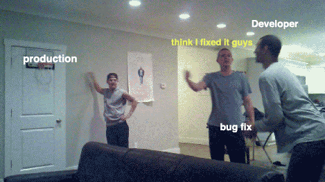
The only thing more frustrating than fighting with a tough bug, is fixing it only to later on discover that the bug is still there. Or even worse, that more bugs have been introduced in your code thanks to the "solution".
To avoid this kind of situation, it's key that you test your code. And if you can do it with automated unit testing, much better.
Ideally, each section or component of your codebase should have its own tests. And these tests should be run every time any modification is made to the codebase. This way, and if the test are correctly written, we can notice a new bug as soon as its introduced. Which of course makes it easier to find its cause and solve it.
If you don't have automated tests (you really should if you want to create quality software), at the very least test your code manually, reproducing all possible interactions the user could have with it, and make sure the bug was effectively killed.
Write Clean Code¶
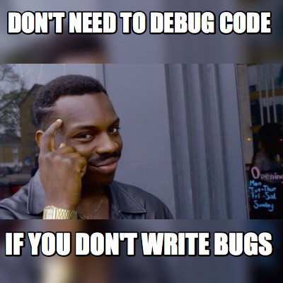
The best way to fight bugs is to avoid inserting them in the first place. Writting guaranteed bug-free code is impossible for any programmer, but there are a few things you can do to reduce the chances of bugs being inserted.
A good place to start are the classic DRY, KISS and SOLID principles.
There are whole books written about these topics, but long story short, these are principles that aim to make software easy to develop, easy to understand and maintain, and as close to bug free as possible.
Write DRY code¶
The DRY principle stands for "Don't repeat yourself". It basically means that we should avoid repetition of the same code whenever possible.
For example, if you see that you're performing the same operation over and over again on different parts of your code, a much better approach would be to abstract that logic into a function and call the function instead of directly performing the operations on different parts of your code.
In this way, if some bug or unexpected behavior happens in that operation, we know there's only one piece of code responsible, and not many dispersed around the codebase.
Write simple code when possible¶
The KISS principle stands for "Keep it simple stupid". As a software project grows, it inevitably starts to get more and more complex. As new, unplanned, features are added and different devs start to work on it, different logic and ways to execute tasks may be implemented within the same project.
This makes the code harder to understand, maintain, and work with. And when code is hard to understand, it gets really easy to make wrong assumptions and insert bugs.
We should always aim for software that is easy to read and understand, with a crystal clear logic that is explicit for everyone and not just for us.
Keep in mind that somebody else in the future may have to work with the code you wrote, so make it easy for that person to understand what you're doing. Even you after a few months might not even remember what you tried to do with that function.
Also keep in mind that no software stays the same forever. The nature of software is to change and be enhanced by new features, so your code should be easy to modify if needed.
And taking this point further, you should modify your code whenever you can find a simpler way to execute the same tasks.
Maybe after including a few new features, the design you had in mind at first isn't still the best option. Another cool thing about coding is that nothing is written in stone, and things can be easily turned around when needed. So take advantage of this and get used to constantly refactoring your code in the look for the simpler approach.
Some practical concepts that help with this are using explicit function and variable names, separating concerns into different functions and code modules, and writing short comments to explain your code when your tasks is inevitably complex.
Use the SOLID principles¶
SOLID are a set of principles that apply mostly to OOP. They were established by Robert C. Martin (who also happens to be the author of the agile manifesto as well) in this book about object oriented design.
- S stands for "Single Responsibility", which means that a class should have one, and only one job.
- O stands for "Open Closed Principle", which means that you should be able to extend a classes behavior, without modifying it.
- L stands for "Liskov Substitution Principle", which means that derived classes must be substitutable for their base classes.
- I stands for "Interface Segregation", which means a client should never be forced to implement an interface that it doesn’t use, or clients shouldn’t be forced to depend on methods they do not use.
- D stands for "Dependency Inversion Principle" which means that entities must depend on abstractions, not on concretions. It states that the high-level module must not depend on the low-level module, but they should depend on abstractions.
As mentioned, SOLID is more applicable to OOP than to general programming. We're not going to go in depth into OOP in this article, but is still good to know these principles and keep them in mind.
Now let's learn about some tools you can use to help you debug your code.
There are many tools we can use to either reduce the chances of inserting bugs into our code, or to fight existing bugs more efficiently.
In that regard, we're going to take a look at TypeScript, the popular (and very useful) console.log, and the debuggers built into VS Code and Chrome.
These tools and examples will be centered around JavaScript, but the principles apply for any programming language.
You should also know that most code editors and web browsers nowadays have built-in debuggers, but we're going to review VS code and Chrome since they're the most popular.
And last, you should also know there're specific debugging tools you can use to debug specific types of apps, like React and Redux dev tools, which are browser extensions you can install to help you debug your code more efficiently.
But we're going to review these in the future in a separate article about how to debug a React app. ;)
How TypeScript Helps Write Clean Code¶
I mention TypeScript as the first tool, because it's closely related to the previous section about writing clean code.
TypeScript doesn't just provide you with a robust typing system for JavaScript. It also adds a compiler that helps you identify bugs and misconceptions in your code before you even run it. It provides amazing autocompletion, and can be thought of as an automatic documentation tool.
To see just a tip of its benefits, let's revisit the previous example in which we didn't provide the right arguments to our function call.
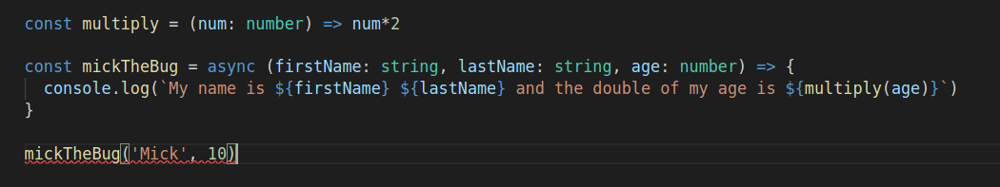
As you can see here, before even running the program TypeScript immediately detects that we're missing an argument and gives us the following error:
Expected 3 arguments, but got 2.ts(2554)
index.ts(6, 64): An argument for 'age' was not provided.
These kinds of notifications are extremely helpful, specially when working on big projects in which you have to interact with many APIs or different code sections.
So in that way, if your're used to plain JavaScript, TypeScript may feel like unnecessary boilerplate at first. But in the long run it will surely save you time and prevent you from inserting silly bugs in your code.
How to Use Console.log to Debug Code¶
Logging your code in the console is the most basic way of debugging and the first one we learn to use as devs.
The idea is to print the value of variables, functions, inputs and outputs to check the logic we have in our mind against what is really happening in our code. It also helps us see what wrong assumptions we're making.
Although it's a basic tool, we can do some cool stuff with it. Let me show you.
If we call console.log we will get whatever object we pass as parameter printed in our console.
const arr = []
console.log(arr) // []
const populateArr = (elem1, elem2, elem3) => arr.push(elem1, elem2, elem3)
console.log(populateArr) // [Function: populateArr]
populateArr('John', 'Jake', 'Jill')
console.log(arr) // [ 'John', 'Jake', 'Jill' ]
console.table is great when working with arrays or objects, as it sets the information within a table where your can easily see keys/indexes and properties/values.
const arr = ['John', 'Jake', 'Jill']
console.table(arr)
//┌─────────┬────────┐
//│ (index) │ Values │
//├─────────┼────────┤
//│ 0 │ 'John' │
//│ 1 │ 'Jake' │
//│ 2 │ 'Jill' │
//└─────────┴────────┘
const obj1 = {
name: 'John',
age: 30,
job: 'Programmer'
}
const obj2 = {
name: 'Jason',
age: 32,
job: 'Designer',
faveColor: 'Blue'
}
const arr2 = [obj1, obj2]
console.table( arr2 )
// ┌─────────┬─────────┬─────┬──────────────┬───────────┐
// │ (index) │ name │ age │ job │ faveColor │
// ├─────────┼─────────┼─────┼──────────────┼───────────┤
// │ 0 │ 'John' │ 30 │ 'Programmer' │ │
// │ 1 │ 'Jason' │ 32 │ 'Designer' │ 'Blue' │
// └─────────┴─────────┴─────┴──────────────┴───────────┘
When logging many things at the same time, console.group gives us an organized way of seeing things.
const arr1 = [22, 23, 24]
const arr2 = [25, 26, 27]
console.group('myArrays')
console.log(arr1)
console.log(arr2)
console.groupEnd()
const obj1 = {
name: 'John',
age: 30,
job: 'Programmer'
}
const obj2 = {
name: 'Jason',
age: 32,
job: 'Designer',
faveColor: 'Blue'
}
console.group('myObjects')
console.log(obj1)
console.log(obj2)
console.groupEnd()
// myArrays
// [ 22, 23, 24 ]
// [ 25, 26, 27 ]
// myObjects
// { name: 'John', age: 30, job: 'Programmer' }
// { name: 'Jason', age: 32, job: 'Designer', faveColor: 'Blue' }
console.assert is useful when testing conditions in our code. It takes two arguments: the first one is a condition and the second one is the message that logs if the condition is false.
const arr1 = [22, 23, 24]
console.assert(arr1.indexOf(20) !== -1, '20 is not in my array')
// Assertion failed: 20 is not in my array
console.warn and console.error are useful when debugging errors in our code. The first one will print the error with a yellow background and the second with a red background.
console.warn('No biggie') // No biggie
console.error(new Error('Error detected'))
// Error: Error detected
// at Object.<anonymous> (/home/German/Desktop/ger/code/projects/test.js:6:15)
// at Module._compile (node:internal/modules/cjs/loader:1101:14)
// at Object.Module._extensions..js (node:internal/modules/cjs/loader:1153:10)
// at Module.load (node:internal/modules/cjs/loader:981:32)
// at Function.Module._load (node:internal/modules/cjs/loader:822:12)
// at Function.executeUserEntryPoint [as runMain] (node:internal/modules/run_main:79:12)
// at node:internal/main/run_main_module:17:47
How to Use Visual Studio Debugger¶
As our apps grow and start to get more complex, console.logging around becomes a not so efficient practice.
To help us in our fight against bugs, debuggers were developed. They are nothing more than programs that are able to read other programs and go through them line by line, checking whatever information we want along the way (such as the value of variables, for example).
The first example we're going to see is Visual Studio debugger.
To debug a Node.js app we don't need to install anything extra (assuming we have VS Code and Node installed in our computer), as the node debugger comes built-in in VS code.
If you're debugging in another language like Python or Java, you might need to install a specific VS extension before running the debugger.
To start, we just select the file we want to debug and press the bug icon.
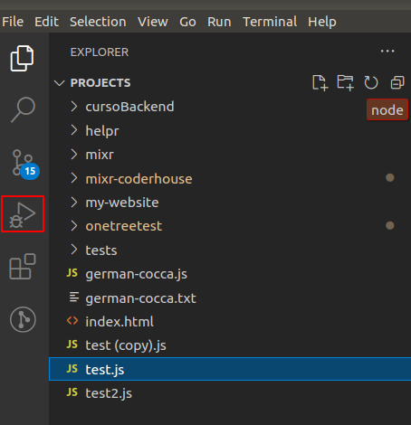
After that, we'll be presented with the following screen:
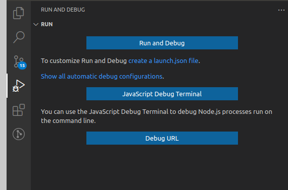
We'll select "Run and debug", which will just run the program in the editor for us.
Take into account that you could also create a launch.json file, which is a file VS code uses to "know" how to run your program. For this simple example it won't be necessary, but know that this possibility exists.
After clicking the "Run and debug" button, our program will run and we'll get to the following screen:
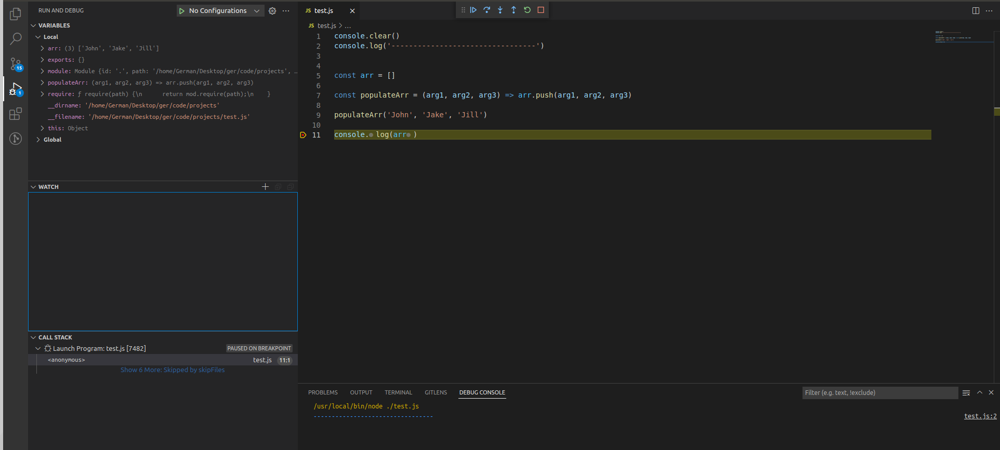
On the top left side, we have all the variables available in the program, both at local and global levels.
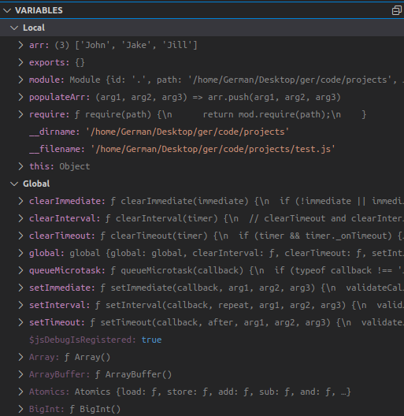
Beneath, we'll have a space were we can declare expressions in particular we'd like to watch. Expressions can be anything, like particular variables or functions you'd like to keep an eye on to evaluate how they change along with your program.
For example, I added my variable arr and VS code shows me the value of that variable:
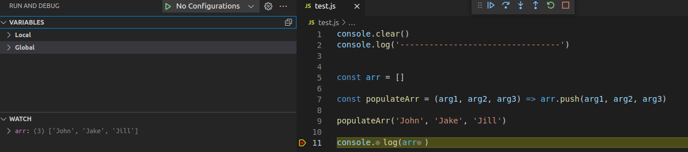
And beneath that we can see the call stack (if you don't know what that is here's an awesome video that explains it), the scripts that are being loaded, and the breakpoints we've set in our code (we'll see what these are in a sec).
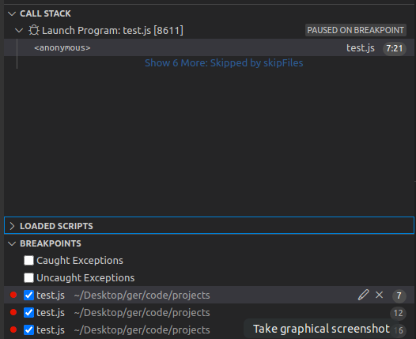
Breakpoints are a big part of what makes debuggers useful. As their name indicates, they are points you can declare in your code in which the debugger will stop running the program. When the program stops, you'll be able to check all the information we've previously mentioned as it is in that particular moment.
So breakpoints allow us to see the actual information the program is working with, without the need of logging anything into the console. Pretty cool!
You can identify a breakpoint by the little red dots that appear to the left of the line numbers in your code (or by looking into the section mentioned above).
By default, when you run the debugger a breakpoint will be inserted in the last line of your code. To insert new break points, just click to the left of the line number you'd like the debugger to stop at.
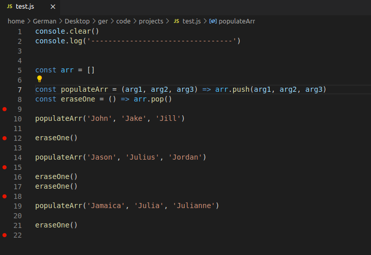
Now when you run the debugger you'll see there's a tiny left arrow on top of the first breakpoint, indicating that's where the program execution has stoped.
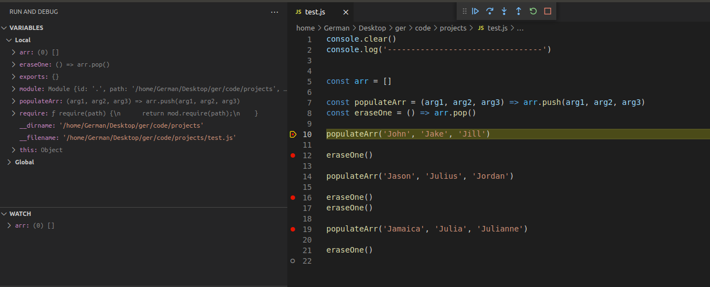
On the top of the screen we have the controls, that will allow us to go through the program stepping from breakpoint to breakpoint.
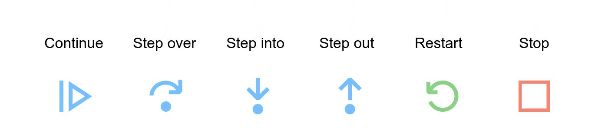
- The Continue button runs the program and stops only on user-defined breakpoints.
- With Step Over, if there is a function call, it executes it and returns the result. You don't step into the lines that are inside the function. You just go directly to the function return value.
- Step Into goes inside the function line by line until it returns, and then you go back to the next line right after the function call.
- With the Step Out button, if you have stepped in a function you can skip the remaining execution of the function and go directly to the return value.
- Restart runs the debugger from the top all over again and Stop exits the debugger.
So there you go, that's a very powerful debugger built into your code editor. As you can see, with this tool we can check a lot of information at the same time, just by setting breakpoints wherever we want and without the need of any console.logs.
Chrome Debugger¶
To debug in Chrome, we start by opening our app in the browser. In my case, I created a simple HTML file where my JS file is linked (same file as the previous example).
Then we open the developer tools (ctrl+shit+i or right click -> inspect) and go to the "sources" tab.
We should be seeing something like this:
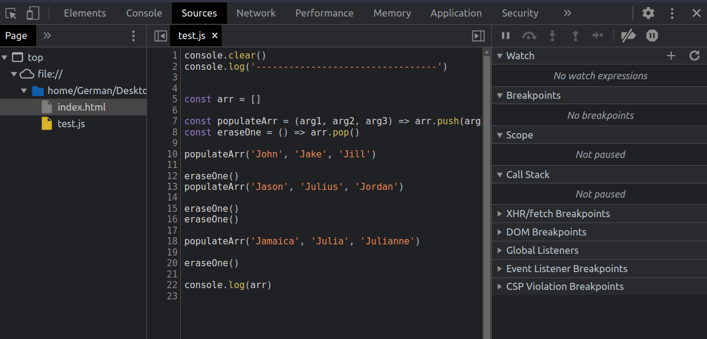
On the left side we can see the files available in our app (in my case there is only an HTML file and the JS file.) In the middle we can see the code of our selected file, and on the right side we have a set of information very similar to what we had in VS Code.
To set a breakpoint, we have to click on top of the line we want to stop in. In Chrome, breakpoints are identified as blue arrows on top of the line number.
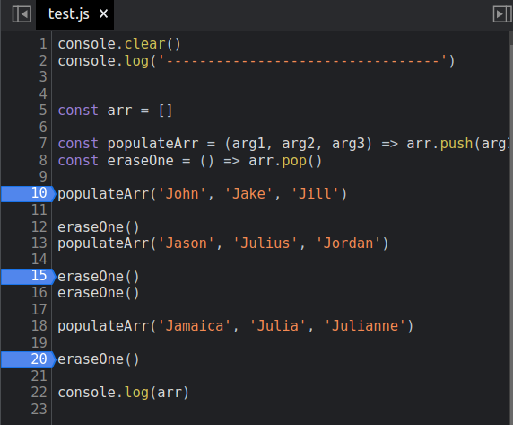
Then if we refresh our page, the script will stop in the first breakpoint and we'll be allowed to navigate through it using the controls, which work exactly the same as in VS code.
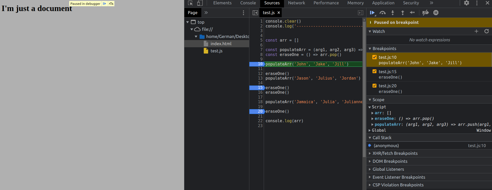
As we've seen, Chrome and VS code debuggers work very similarly, and which one you decide to use is just a matter of preference.
Conclusion¶
Debugging is a central part of what we do as developers. Because of this, I think it's a good idea to think about it and do it in an efficient way, instead of just reacting to bugs as they happen.
As we've seen, there're plenty of things we can do, both from a mental and from a technical point of view, to become better debuggers.
Hope this helped and see you in the next one!